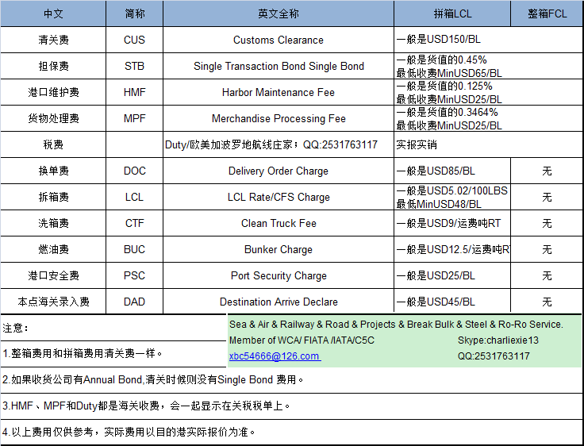

美国目的港清关（海运整箱和拼箱）一般有什么费用？
笔者在要求美国目的港代理进行清关报价时，经常碰到很多诸如HMF、MPF、BOND、DOC、CTF、BUC、PSC、DAD等费用，让人云里雾里，压根就不知道这些简称的英文全称是什么，更不知道具体指的是什么。有感于此，笔者痛下决心，通过向老外请教和查询各种资料，终于基本搞清楚了，现在总结出来分享给大家。
一、整箱FCL 目的港常见费用
1. Customs Clearance清关费：一般是$150/BL
2. Single Bond担保费：一般是货值的0.45%, 最低收费Min$65/BL
3. HMF（Harbor Maintenance Fee）港口维护费：一般是货值的0.125%, 最低收费Min$25/BL
4. MPF（Merchandise Processing Fee）货物处理费：一般是货值的0.3464%, 最低收费Min$25/BL，最高收费Max$485/BL
5. Duty关税等税费：实报实销，查询网址：https://hts.usitc.gov/
备注：
1. 整箱和拼箱清关费一样。
2. 如果收货公司有Annual Bond，清关时候则没有Single Bond费用。
3. HMF、MPF和Duty都是海关收费，会一起显示在关税税单上。
4. 以上费用仅供参考，实际费用请以目的港收取的为准。
二、纽约拼箱LCL 目的港常见费用
1. Customs Clearance清关费：一般是$150/BL
2. Single Bond担保费：一般是货值的0.45%, 最低收费Min$65/BL
3. HMF（Harbor Maintenance Fee）港口维护费：一般是货值的0.125%, 最低收费Min$25/BL
4. MPF（Merchandise Processing Fee）货物处理费：一般是货值的0.3464%, 最低收费Min$25/BL，最高收费Max$485/BL
5. Duty关税等税费：实报实销
以下为拼箱特有的费用
6. DOC换单费：一般是$85/BL
7. LCL Rate（CFS Charge）拆箱费：一般是$5.02/100LBS,Min$48/BL
8. CTF（Clean Truck Fee）洗箱费：一般是$9/运费吨（RT）
9. BUC（Bunker Charge）燃油费：一般是$12.5/运费吨RT
10. PSC（Port Security Charge）港口安全费：一般是$25/BL
11. DAD（Destination Arrive Declare）本点海关录入费：一般是$45/BL
备注：
1. 整箱和拼箱清关费一样。
2. 如果收货公司有Annual Bond，清关时候则没有Single Bond费用。
3. HMF、MPF和Duty都是海关收费，会一起显示在关税税单上。
4. 以上费用仅供参考，实际费用请以目的港收取的为准。
更多如果想要了解更具体的内容，对于以上资讯还有什么不懂的，请联系QQ:2531763117，欧美加波罗的海航线专家，专业进出口代理，出口报关，出口退税具备十分丰富的经验，